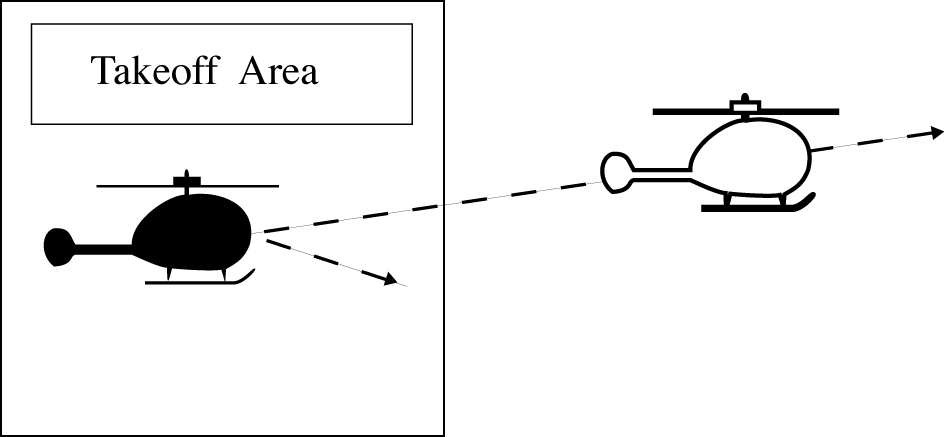
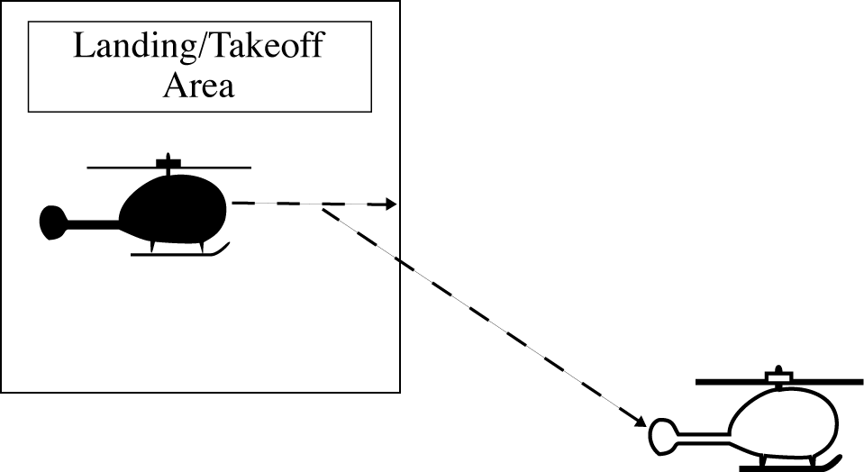
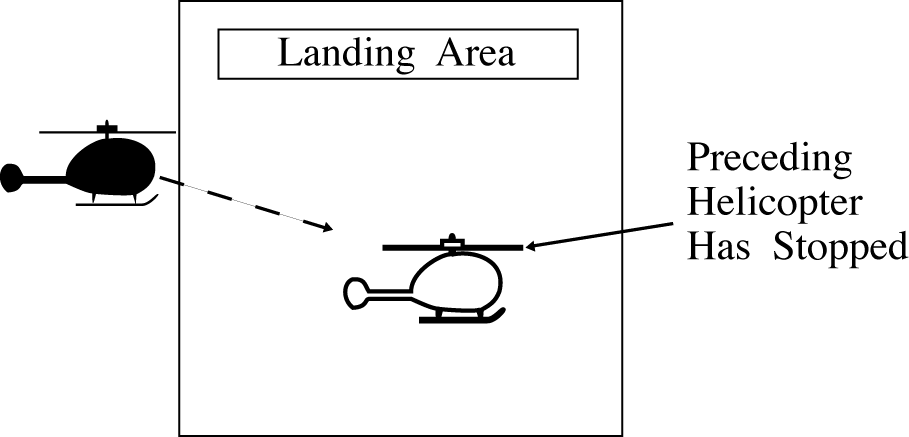
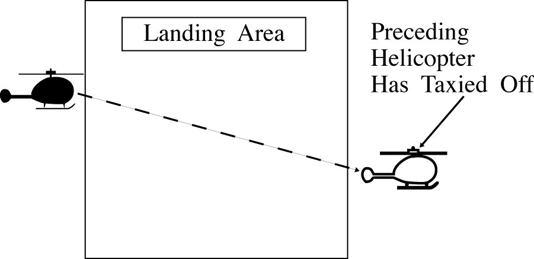
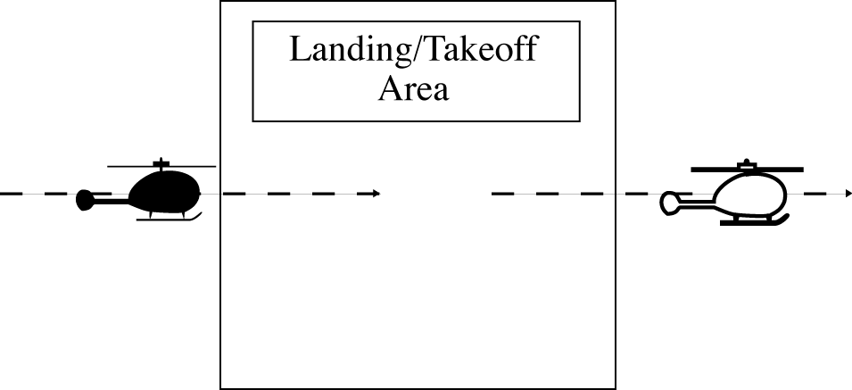
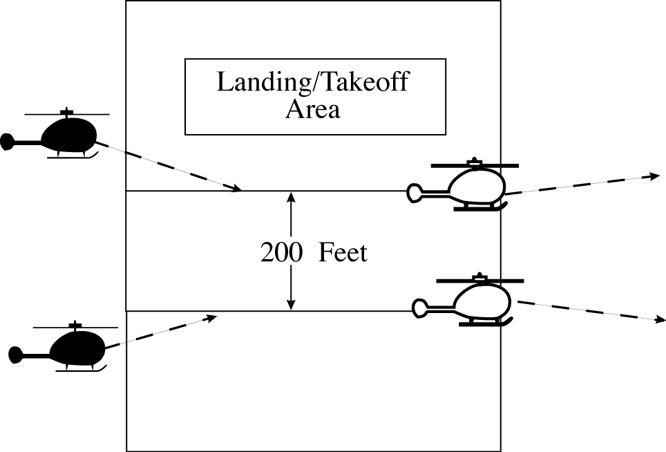

Chapter 3. Airport Traffic Control - Terminal
Section 11. Helicopter Operations
3-11-1. TAXI AND GROUND MOVEMENT OPERATION
- When necessary for a wheeled helicopter or powered‐lift aircraft to taxi on the surface, use the phraseology in paragraph 3-7-2, Taxi and Ground Movement Operations.
- When requested or necessary for a helicopter or powered‐lift aircraft to proceed at a slow speed above the surface, normally below 20 knots and in ground effect, use the following phraseology, supplemented as appropriate with the phraseology in paragraph 3-7-2, Taxi and Ground Movement Operations.
- When requested or necessary for a helicopter or powered‐lift aircraft to proceed expeditiously from one point to another, normally below 100 feet AGL and at airspeeds above 20 knots, use the following phraseology, supplemented as appropriate with the phraseology in paragraph 3-7-2, Taxi and Ground Movement Operations.
WAKE TURBULENCE APPLICATION
- Avoid clearances which require small aircraft or helicopters to taxi in close proximity to taxiing or hover‐taxi helicopters.
3-11-2. HELICOPTER/POWERED‐LIFT TAKEOFF CLEARANCE
- Issue helicopter or powered‐lift takeoff clearances from movement areas other than active runways or in diverse directions from active runways, with additional instructions as necessary. Whenever possible, issue takeoff clearance in lieu of extended hover‐taxi or air‐taxi operations.
- If takeoff is requested from non‐movement areas, an area not authorized for helicopter or powered‐lift aircraft use, or an area off the airport, and, in your judgment, the operation appears to be reasonable, use the following phraseology instead of the takeoff clearance in subparagraph a.
- Unless agreed to by the pilot, do not issue downwind takeoffs if the tailwind exceeds 5 knots.
3-11-3. HELICOPTER/POWERED‐LIFT DEPARTURE SEPARATION
Separate a departing helicopter or powered‐lift aircraft from other helicopters or powered‐lift aircraft by ensuring that it does not takeoff until one of the following conditions exists:
- A preceding, departing helicopter or powered‐lift aircraft has left the takeoff area. (See FIG 3-11-1.)
FIG 3-11-1Helicopter Departure Separation 
- A preceding, arriving helicopter or powered‐lift aircraft has taxied off the landing area. (See FIG 3-11-2.)
FIG 3-11-2Helicopter Departure Separation 
3-11-4. HELICOPTER/POWERED‐LIFT ARRIVAL SEPARATION
Separate an arriving helicopter or powered‐lift aircraft from other helicopters or powered‐lift aircraft by ensuring that it does not land until one of the following conditions exists:
- A preceding, arriving helicopter or powered‐lift aircraft has come to a stop or taxied off the landing area. (See FIG 3-11-3 and FIG 3-11-4.)
FIG 3-11-3Helicopter Arrival Separation 
FIG 3-11-4Helicopter Arrival Separation 
- A preceding, departing helicopter or powered‐lift aircraft has left the landing area. (See FIG 3-11-5.)
FIG 3-11-5Helicopter Arrival Separation 
3-11-5. SIMULTANEOUS LANDINGS OR TAKEOFFS
Authorize helicopters or powered‐lift aircraft to conduct simultaneous landings or takeoffs if the distance between the landing or takeoff points is at least 200 feet and the courses to be flown do not conflict. Refer to surface markings to determine the 200 foot minimum or instruct a helicopter or powered‐lift aircraft to remain at least 200 feet from another helicopter or powered‐lift aircraft. (See FIG 3-11-6.)

3-11-6. HELICOPTER/POWERED‐LIFT LANDING CLEARANCE
- Issue landing clearances to helicopters or powered‐lift aircraft going to movement areas other than active runways or from diverse directions to points on active runways, with additional instructions as necessary. Whenever possible, issue a landing clearance in lieu of extended hover‐taxi or air‐taxi operations.
- If landing is requested to non‐movement areas, an area not authorized for helicopter or powered‐lift aircraft use, or an area off the airport, and, in your judgment, the operation appears to be reasonable, use the following phraseology instead of the landing clearance in subparagraph a.
- Unless agreed to by the pilot, do not issue downwind landings if the tailwind exceeds 5 knots.